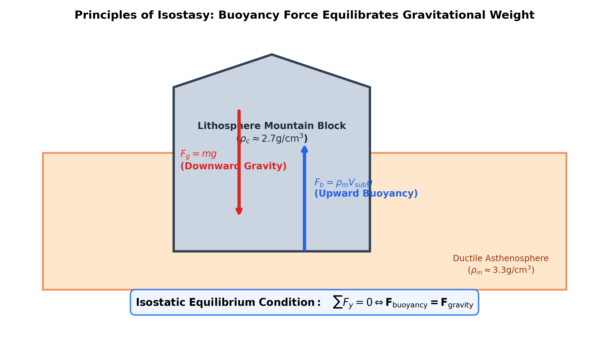
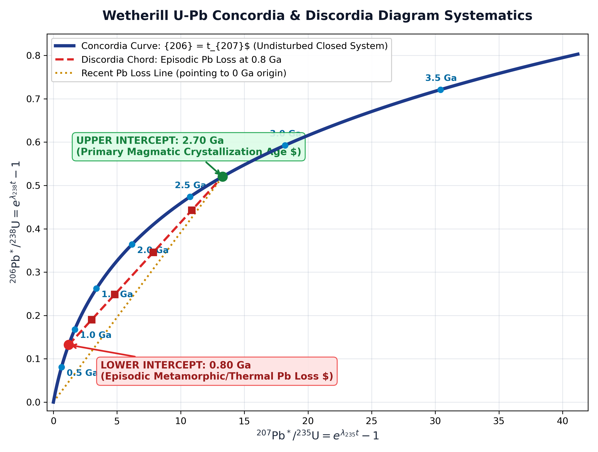
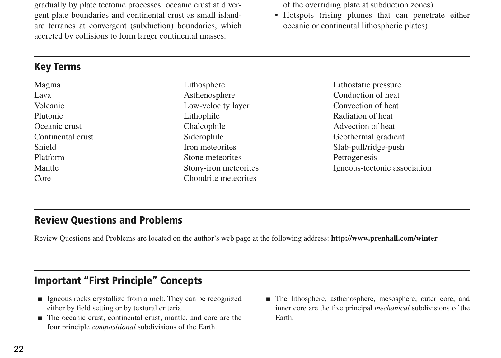

1.1 Science of Geology
Geology. Geology is the science which is devoted to the study of the earth. It deals with all the features of the earth’s surface and with the origin. composition, structure and inhabitants of the earth.
1.1.1 Branches of Geology ‘
The field of geology is very large and it is divided into several branches.
(i) Physical Geology. Physical geology is concerned with the work of natural processes which bring about changes upon the earth’s surface. :
(ii) Petrology. The discussion of the different kinds of rocks is known as petrology. It deals with the study of composition, structure and origin of rocks.
(iii) Mineralogy. Mineralogy includes the study of mineral composition, structure, appearance, stability, occurrence and associations.
(iv) Structural Geology. This branch of geology deals with the study of structures of rocks in the earth's crust. (vy) Stratigraphy. It is the science of the description, correlation and classification of strata in sedimentary rocks including the interpretation of the depositional environments of those strata.
(vi) Palaeontology. Palaeontology is the science of fossils of ancient life forms and their evolution.
(vii) Historical Geology. The study of stratigraphy and palaeontology is included under the historical geology. It gives us a picture of the land and seas, the climate and life of early umes upon the earth.
(viii) Economic Geology. The economic geology deals with the study of minerals, ores and fossil fuels of economic importance. ix) Mining Geology. This branch of geology is concerned with the study of application of geology to mining engineering.
(x) Engineering Geology. The engineering geology includes the study of application of geology to civil engineering.
1.1.2 Scope of Geology
Geology is of practical importance to mankind. It plays a very useful Part in the search of coal, petroleum and minerals used as atomic fuels. It is directly concerned with the ore minerals, industrial minerals and mining industry. The importance of geology has also been recognized in the field of civil engineering. Many engineering projects such as water supply, construction of dams, reservoirs, tunnels, bridges, etc. require geological advice,
1.2 Solar System
The earth is a planet. It is a member of the solar system. Nine planets and the sun are the main bodies of the “solar system”. The planets in the order of increasing distance from the sun are Mercury, Venus, Earth, Mars, Jupiter, Saturn, Uranus, Neptune and Pluto. Each planet moves around the sun and maintains an elliptical orbit. The orbits of all the planets are almost in the same plane which is close to the equatorial plane of the sun. The 4 Plancts also rotate about their axes. About 99.85%. of the mass of the solar system is contained within the sun while the planets collectively make up most of the remaining 0.15%. On the basis of their location, the planets can be divided into two groups: (i) “inner planets" which include Mercury, Venus, Mars and Earth, and (ii) “outer planets” which include Jupiter, Saturn, Uranus, Neptune and Pluto. The planets of the two groups differ markedly in size, density, composition and rate of rotation.
Size. The members of the inner planet group are small in size, On the other hand, the members of the outer planet group are so large that they are often called giants.
Density. The inner planets are generally dense, their density being 4x 10 kgm™ or more. The density of outer planets is much lower. For example, the Saturn has a density less than that of water.
Composition. The low density of the outer planets suggests that they consist mostly of substances like hydrogen, helium, water, ammonia and methane. The high density planets consist almost entirely of silicates and metals.
Saw Bi, 4 Rate of Rotati: tion. The vy, the fastest orbital monic nag METCUPY 1 newest 1 the 2 4 revolution (4% days) PI (48 kinvsec) and the she sun, Ht has Speed of S krn/sec ang lulo, the most distant phe kas Period ot lion. Fequires 248 years wo, aks an orbital 13. orn ; He OE revoly, ‘ E : GIN OF THE EARTH t 1 general the theories of « t i OrigiM of the WO Broups : (1) evolutionary theories. and iil system can be divided inu:
Evolutionary Theories. The theor Catastrophic thorves re during the evolution of the sun, sal Suggest that planets are ebular hypothesis is an example of these ‘*volutionary theories _ Catastrophic Theories. “Carasirophic theoney” agine that planets are formed hy some special wcgog es Stich i 8 the close approach of two Stars or by oll a Smaatopbe, such 4 the stars are so far apart in the ue y Stine ofp stars. However, as ; is extremely rare. The examples of ean idinetal heeraretens and gaseous tidal hypotheses. fare the planetesirual ' The best known hy; pothesises fc f of the solar system are as follows Em of the ch and ther planes ; 1. Nebular hypothesis. a ye 2. Planetesimal hypothesis. ren ; eo) oO 3. Gaseous tidal hypothesis. Ne & j 5. Gas dust cloud hypothesis. * 4p
1.3.1 Nebular Hypothesis APLApoRAN HAs cHanl
The nebular hypothesis was put forward by Kant, the German philosopher in 1755 and Laplace, the French mathematician in 1796. This hypothesis suggests Lal the sun and planets, including the earth have formed from a disc-shaped rotating nebula. A vast cloud of hot gas is called “nebula”. The ucbular hypothesis nay be summarized as follows, 1. Originally there was a large, hut, gaseous nebula which rotated along ils axis [Fig. 1.1 (a)].
i 2. As the gas lost energy by nudiation, it became cooler. As a result q the nebula contracted inward and its speed of rotation about its axis increased to conserve angular momentum. Due to this the centrifugal force in the equatorial zone also increased thereby causing the nebula to bulge out in the equatorial zone. : 3. The cooling and contraction of the nebula continued and ultimately a slage came when the centrifugal force became greater than y NEBULA spi Bens ae SEES EES mS ee eae 1 seeps SP” sor” See Seg +5 q + ne Aa ¢ ff Y ee ITT Seger VN elgrit-a y> nine See a
6. The central mass of the nebula continued to shrink and finally formed the sun. The nebular hypothesis was not favoured because it had the follawing j defects. 3 (f) This hypothesis could not explain the cnergy distribution within the solar system. The sun which possesses most of the mass (about 99.9%) of the solar system, should have gathered maximum angular momentum. However, 98% of the angular momentum is concentrated in the planets and the remaining 2% is present in the i sun. In other Words, the sun does not rotate fast enough. I zh. It should have much higher speed of rotation. i (a) There was not enough mass in the rin i Honal attraction for condensation into individual plas, ae
1.3.2 Planetesimal Hypothesis ,
The planctesimal hypothes: 4 Aypothesis was proposed by Chamberlin j in 1904. The main points of this hypothesis are as followg nnd Moulton . The sun existed bef me | z fore the formation « Star approached very close to prope Planets. A lenge parsing 2. Due to the disruptys PUVE forces of the » 2 pull of the passing star, giant runes OC Song gravitational Surface of the pre-existing sun (Fig. 12) re torn from the Star of — Stak 7 tm, gp Ee fecojpuge Ge F SUN a
4, The planetesimals started flying as cold bodies inte orbits around the sun in the plane of the passing star. By collision and gravitational attraction, the larger planctesimals swept up the smaller Pieces and thus planets were formed.
The main flaws in the planctcsimal hypothesis ure as follows. (2 Most of the material which was ejected by the explosive action of the sun would come from the interior. It would be so hot that ‘ the gasses would disperse in the space rather than condense into planets.
(ii) Although the angular momentum umparted to the planets by a passing star would be greater than that produced the rotation ol a nebula, the amount is still less than that observed.
(iii) The space is vast and therefore the probability of a close approach ‘of two stars is extremely unlikely.
1.3.3 Gaseous Tidal Hypothesis
This hypothesis was proposed by Jeans and Jeffreys in 1925. The gaseous tidal hypothesis may be summarized as follows 1. A very large star progressively approached close to the sun. Due 4 to the gravitational pull of the star, a gaseous tide was raised on the surface of the sun. As the star came nearer , the Ude increased in size.
2. When the star began to move away, the gaseous tide was detached from the sun. Its shape was like a spindle being thickest in the middle (Fig. 1.3). i mea ie fees Ae REESE fee aja ae Ce SUN on Negi <5 gs i E55 ad atte fig i STA aes : Fig. 1.3. Gaseous Tidal Hypothesis.
3. This spindle-shaped gaseous mass soon broke into ten pieces, nine of which condensed into planets and the remaining one which further broke into small pieces, formed the group of planetoids. i The main objections to the gaseous tidal hypothesis are as follows. (0) The passing star is unable to impart the proper angular momentum to the detached gaseous masses. % (ii) The hot gaseous mass pulled away from the sun would not form t solid planets but would dissipate into the space. !
1.3.4 Binary Star Hypothesis
This hypothesis was proposed hy Lyttleton in 1938, Before the formation of planets, the sun had « companion star, Another Star approached close to these double stars and dragged the companion star away, A gaseous filamend was torn from the companion star and it remained clege to the eon The planets werc originated {rom this @aseous filament in the s; Wi * described in the gascous tidal hypothesis iaisaaiiad
1.3.8 Recent Theories t
Since 1943 there has heen Laplacian type These theories nl pestis Swine beck Wo theories of in the chemical compositions and densities f fae the observed venation, Laplacian theory, that the sun's nut Planets The objection ta been removed. The mai paca nan 8 ton Sena has oo ‘main points of the recent theories are as follows Hl FTI Wat 8 ise shaped clo pss at scan the san 1 The planets were formed by gradual aggreyation « matter in the cloud. ° the diepermed () Close to the sun where temperatures were H b on mrincnamcs tang cae metals and rockforming compounds: Hence the denser plane's &rew in the hot region lying closer to the sun, (i) Volatile materials such as water, methane and asnmonia were blown away. They condensed in the cold outer sone of the i solar system thereby forming low density planets .
3. The primitive sun had a considerable Magnetic field. {t acted asa rolaling magnet and acceierated the hydrogen ions present in the dust cloud. Due to this acceleration the gases moved outwards away from the sun carrying the fine dust «ih them and jeaving i only larger solid masses in the region of mner planets. Thus there a was the transfer of momentum from the sup te the gas joes whuch slowed down the sun’s rotation, This process also explains how the dust cloud was divided into two Tegions. an vaner gas-free region of solid particles and an outer region rich in gases. 1.4, AGE OF THE EARTH j The age of the earth as determined by current methods of radiometnic dating is about 4600 million years. Before the discovery of radiometric dating, several attempts were made to uetermune the age of the earth The important ones are as follows.
1. From history of organic evolution a 2. From rate of sedimentation.
3. From salinily of sca water A 4, From rate of cooling
1.4.1 From History of Organic Evolution -coiiem'h RSIS
, 1. lite on it tat As soon as the earth cooled ard stu s sme Sd win ( the organisms had a simple eel Reet sived quite recently, possesses the ‘ the, pea Se ar ir rthe history of organic evolution, the biologists mos! complex structure, Tre mth to be about 1000 million years. vag have determined the age of the earth to ee . PRINCIPLES OF ENGINEERING GEOLOGY ; 1.4.2, From Rate of Sedimentation F The formation of sedimentary rocks started with the solidification of the earth. Hence efforts were made to calculate the age of the earth from the rate of sedimentation in the ocean. The method involved was to determine the total thickness of sedimentary racks that bad been deposited during the : earth's history, and then to divide it by the rate of sedimentation. This method gave an age of around 500 million years. This method had many difficulties a - some of which are as follows. a 1. Different sediments accumulale at different rates under varying conditions. 7 2. A rate of sedimentation determined for recent sediments can not necessarily be applied to the past. 4
1.4.3 From Salinity of Sea Water q
It is assumed that the oceans originally had fresh water. If the ammount of salts carried to the ocean each year by rivers is known, it can be calculated how much time it look to accumulate the salt now present in the ocean. This method gave an age of about 120 million years. This estimate was not i accurate as the rate of accumulation of salts could never have been uniform all through the history of the earth
1.4.4 From Rate of Cooling UJ
In 1897, the British physicist Lord Kelvin calculated the age of the earth = from the temperature difference between the initial molten planet and its present state. He assumed that the ratc of heat loss was constant throughout. This method gave an age of 20 to 40 million years which was more than 100 times lower than current estimates.
Kelvin also made estimates based on assumptions concerning the origin of the sun’s heat. The age of the earth calculated by this method gave similar results, that is the figurcs ranged from 20 to 40 million years. Kelvin's estimates for the sun and the earth were wrong because he did not take into account the fierec heat generated by the decay of radioactive elements. A > 1.5. RADIOMETRIC DATING i y secine methods of raion dating are based onthe radioactive decay j of certain isotopes that have very Jong half-lives, The radivactive isotope is i}: often referred to as the “parent” and the clements resulting from the decay é of the parent are called the “daughter products”. The age of rocks anu minerals that contain radioactive isotopes is determi sept = lermined by measuring the accumulation of the daughter products in them. This i. “radiometric dating”. Radiometric dating is very reliakie wee radioactive decay proceeds at a constant rae and it remaii itteeaen any physical or chemical agems, ins unaffected by A comunonly used term in radometric dating i mon way of expressing the rat ae ey . itis a coimPressing the rate of radioactive decay. Half-life may be defined as the time r ® ro fequired for a i: aan £0 one-half of its initial Bi pedo of radioactive substance to in ~ 238 is 4500 million years example, the half life Period of ‘one gramme of U ~ 233 fs ‘This means that in 4500 million years been transformed into the lead - 06, half Satame, the rest having Of the many radioactive i : Proved useful in viding nee that exist im nature, only three have isotoy nS TOE Fadiometric ages for anciemt rocks topes ure given in Table 1.1. The methods These three dating rocks include Potassium - Argon rachis are commonly used for . Lead. The basic equation for calculi um - Strontyum and Uranium follows. fating the age of a rock sarmple is as Where Nd is the number of atoms of the danghter product, Np is the number of atoms of the parent radioactive substance the halflife of the radioactive subsance nym Table 1.1, Radioactive Isotopes Used in Radiometric Dati Radioactive | Half-life in | Daughter Minerals eon rcs Parent mittion years | Product commoniy dated Uranivm-238 | 4500 my. | Lead-206 | Zitooa. Sphene Potassium40 | 11999 my. | Argon-4o | Muscovne, Bioate, Homblende, Glauconite, Volcanic rock Rubidium-87 | 47900 my. | Strontium-87 | Muscovite. Botte. i Microcline, Metamorphic In practice mass spectrometers are used to measure precisely and ace curately the quantities of parent and daughter radioactive substance in rocks. jioactive datin; it is assumed that none of the daughter product has In radioacti Bs hon been Ieached out from the rock and that none has been introduced a figure of some 3500 million years jometric dating methods give a figure of ue y for a ‘ideal ‘nis of the earth's crust. The radioactive sure meteorites has yielded dates ‘of upto 4600 million years I probabl correspond to the age of the earth.
1.6 Common Radiometric Methods
1.6.1 Potassium—Argon nn sien year. i comm
Potassiuin-40 has a bal life of |e A Te inert gas found in the found in many rocks, It Co can be used to ate rocks that are milions atmosphere. The K—Ar me of years old, including meteorites (age 4600 million years). However rocks younger than 9.1 million years are difficult to date because they contain very little radiogenic argon. The minerals that are suitable for K—Ar dating include biotite, muscovite, hornblende and nepheline. The potassium felspars, such as orthoclase and microcline are unsuitable for K-Ar dating because they are likely to loose argon readily at almospheric temperatures, 3
1.6.2 Rubidium—Strontium Method a
Rubidium-87 has a half life of 50,000 million years. The Rb—Sr method tg can be applied to rocks of almost any geological age. However rocks younger than 20 to 30 million years may crete analytical difficultics beCause of the minule amount of radiogenic $r-87 prescut. The Rb-Sr method can be used to date such common rockforming minerals as muscovite, biotite and all types of potassium felspars including ortho-clase and microcline. 1.6.3, Uranium—Lead Method The half life of Uranium-238 is 4500 million years. Uranium and thorium frequently occur in the same mineral and it is therefore possible to make two independent age determinations on one mineral sample. + The U—Pb method can be applied over the greater part of the geological 4 age range, although their usefulness decreases sharply for rocks younger i than 100—200 million years. This method is less commonly used than the 4 K—Ar and Rb—Sr methods but may be used to date rare minerals in which 4 uranium and thorium are major constituents. It is frequently applied to minerals such as zircon and sphene.
It should be noted that the U—Pb methods are of much greater valuc 4 than the Th—Pb method. The latter is now only rarely used.
1.6.4 Radiocarbon Dating ;
There are three isotopes of carbon : C-12, C-13, and C-14. Of these qi C-14 is radioactive. Since it has a half life of only 5730 years, it can be used : to date events of recent geological history. Although C-14 is only useful in dating the last small fraction of geological time (75,000 years), it has become an important means for dating Ice Age and archaeological matcrial. Radiocarbon (C- 14) is produced in the atmosphere by cosmic ray bom-' bardment of nitrogen - 14, The C-14 combines with oxygen to form carbondioxide which is absorbed by living organisms. A constant ratio of C-14 to 4 C-12 is established in each organism during its lif catbondioxide is absorbed and the C-14 ig ts life. After death no more F ant “14 decays steadil; itt patticles to N-14, ry lily by emitting beta 1.7, INTERIOR OF THE EARTH ‘The study of the passage of seismic in knowing the structure of the earth’s pital the card ba helped properties of various layers. Eat a elining the physical 'yers. The seismic waves travel at different velocities EN SNS EPS CRULT + LiTHOSPHERE ASTHENOSP HERE — ° CPARTLY mo.ten) cokn ESD, ae “ 0 * Urantie £ 3 MANTLE n ic \mantie/ x 4000 OuTER 7 t Come (Liqui) uw Toco a anone: kn (WNER CORE fea Goud) Mt tiene ——vELocity km/sec— cay cb)
‘The outer superficial layer of the earth is called the at cs aah dawn to 30 or 40 kilometer beneath continents and (0 about aes ocean basins. At the bottom of the crust, the velocity of emia us fies increases abruptly as they enter into a denser Taye called “mani crust-mantic boundary is known as the “Mohorovicic discontinuity In the continental regions, the crust can be divided into tyes gerd upper layer which is less dense (sp. gf. 2.65) and granilic in character, known as “siaf”, while the lower layer which is basaltic in character (SP- en 3.0) is known as “sima™. The term cial represents rocks rich in silica and alumina, and term sima represents rocks containing silica and magnesia. Under oveans only sima layer is found and the sial layer is absent.
1.7.2 Mantle
‘The mantle is located beneath the earth's crust and has a thickness of about 2900 km (Fig. 1.4). It has been divided into two jayers : (4) upper mantle, anu (if) lower mantle The boundary between these 18 at about 700 km depth. The average mineral composition of the upper mantle is similar to ultrabasic rocks like “peridotite” (sp. gr. 3.3). This zone provides lava for oceanic eruptions. [n the Jower mantle the density of the material increases rapidly to 4.3 x 10" kgm * and in the deeper parts it rises to about 5.5 10’ kem™. It has becn suggested that the lower mantle consists of a mixture of periodtite and minerals of higher density. The upper mantle contains a most imy zone called “asthenapp! iportan sphere”. It is located at depths between 50 to 100 km. In the asthenasphere the velocity of S-waves decreases thereby indicating that this zone consists partly of melted rocks. Most basalts originate in this zone. It is belicved that the plastic material of the asthenosphere moves and carries along the lithosvabebt please Te anes _ portion of the earth existing above the asthenosphere is called the “lithosphere”. The lithosphere includes of the minnie anid ‘ihevcrtat. P part of the upper The boundary .
si bare alata the ial and the core is at a depth of about AP way is marked by an abrupt reduction in the velocity es as well as by the disappearance of the S-waves (Fig. 1.4). The “outer core was discovered when i : bent inwards thereby producing a “s if it was found that P-waves were Since the S-waves do not pass Lircook i ite me at the surface (Fig. 1.5). it may be in the liquid state. ter core, il is concluded that The “inner core” extends fro1 an Gea li tennis Pewaves nt sige km to the earth's centre at in the solid state. Both the solid and liquid jae which indicates that it is ‘ 6 of the core are believed to consist of iron and nickel 3 shoienie! gar? Sumilar to iron meteorites and have a density
1.8 Isostasy

$$t = \frac{h \cdot \rho_c}{\rho_m - \rho_c} \approx 4.24 \, h$$
Under Pratt's model (constant compensation depth $D \approx 100\text{ km}$), $\rho_i \cdot H_i = \text{constant}$.
CE. Dutton, in 1889, sy . a : , Suggested that a gravitational balance exisis Bee iW eicied Ware oie hen cr oe af erat : lithosphere floats on the top of the partially a molten substratum (asthenosphere) much like logs float on water. Mountains stand high because they are composed of rocks of low density and ocean basins are low because they ure made up of rocks of higher density. This gravitational balance of the floating lithosphere is called “tsostasy” In the isostatic adjustment mainly vertical movements of the crustal blocks take place. For example, when material is removed from the top of a mountain by erosion, it rises upwards and when sediments derived from it accumulate in a depositional basin, it is depressed due to increased weight Zone of Compensation. Al depths between 96 and 200 kilometers . below the surface, the rocks exist in the plastic state. Here pressures duc to elevated masscs and depressed areas are equal. This zone is called the “zone of compensation”.
Inthe 19th century, while doing thc trigonometrical survey, it was found that the deflection of the plumb line towards the Himalayas was not proportional to the gravitational attraction of the mass of the mountain range. It was very much kes than the estimated value. As a result in 1855, both JH. Pratt and G.B. Airy proposed that the continents consisted of lighter material floating on a denser substratum.
1.8.1 Pratt’s Hypothesis 4
Pratt suggested thut the different heights of mountains were due to blocks of different densities floating ik al the same base level. This idea can ry 7 be illustrated with the help of Fig. 1.6. ott ase .
Blocks of metals having different densities are imumersed in the mer Fy a ae cury. They have equal weight and [1 { | J 1 1 tt: crass sections but different length. fer vote soa estas These blocks sink 1p the same level POM unk Pic pas eS in the mercury but their eat i Fig. 1.6 Prat’s hypothesis of isostasy faces stand out at different heigits. at The lighter the block, the higher It stands. Here the longer bloeks represe! mountains and lower blocks ocean basins. 7
1.8.2 Airy’s Hypothesis
E r ifferent heights of land masses wert Airy considered that the dil density floating at ditTerent blocks of different thickness and of the same density ING ‘OLOG’ q : pRINCIPLES OF ENGINEERING GEC ¥ .
4 Bag: Pi a “7 depths. Fig. §.7 illustrates the mathe —T 2 1 hypothesis. Here all the blocks 200 7 an A — 3 the same material but they uae ‘hes ee whats 4 ferent lengths. The bases of * he Poa A blocks will nut be even and iti +f Eauieuoe: Tear fae 5 even em rhe high [nee ta a ga will also he irregular. TM UT eacuey reste 4 columns will have deep eMC [oe ; J Gow and aw colunas WIRES. pypuesis of souaty.
a short ones, and therefore, the ig 5 ; be uneven. : compensation will <seneally accepted a i explains Very “c Today the Airy’s hypothesis 18 Bi BS Hs atures. . 3 % well the following fea! sare evaposed of Hight material have deep ‘ E (0: The mousing ve nue below. The existence of these : a *roons® extending into the me - and gravitational dala. 7 4 vows as been confirmed by seismic and gravital 4 ifs (ii) The thickness of sial under plains near sea level is only about 30 : ea: kn.
Z) (an) Beneath the oceans the sal layer is absent altogether andthe crust i ig thinner than that of the continents. : 3 1.8.3. Evidence of Isostasy 4 : af If the isostatic theory is correct, we would expect that if weight is added : to the crusi, it will respond by subsiding and when weight is removed, there will be uplifting. Evidence of this type exists.
1. Paris of Norway und Sweden which were covered by the thick — Pleistocene ice sheets, are rising following the melting of the ice. ; 2. When erosion strips off the tops of mountains, the mountains 4 themselves rise up. The processes of uplifting and erosion continue untill the root of the mountain reaches the same height as the surrounding crust.
1.9 Continental Driet


The theory of continents a" . Hesigessisd tat a eh drift was proposed by Alfred Wegener in 1910. years ago) all the conifer “4 uf the Mesozoic era (about 200 million single supercontinent which he ents were united together to form a bean which surounded it, was catego peace” (Fig. 1.10), The huge that this vast continent chi a Panthalassa”. Wegener proposed beginning of the Mesozoic era otros up into smaller continents at the is PICEES Of Wood Hating. oy eft (0 their present positions estvard and quaneesrd ander gen, Te continents were drifted T "Gondwana tang” y ifferential gravitational forces”. Th inciuded Afric, ‘as used for the s al forces e ‘4 South America, Aust southem huge landmass which ' alia, Antarctica and India, and “Laurasia” for the northern landmass which included North America, Greenland and Eurasia (Fig. 1.10). To support his theory, Wegener gave many geological evidences, such as similarities in geological structure, distribution of ruck types and fossils, and similar shapes of coast lines on either side of the Adantic ocean. The theory of continental drift was not accepted for over 40 years, It received support only in 1950's and 60's when gcomagnetic evidences were discovered in its favour. 1.10, EVIDENCES FOR GONDWANALAND
1.10.1 Similarities in Shape of Coastlines
The Atlantic coasts of RD South America and Africa Coad have a roughly similar ie shape. They would fit-in 5 nicely if they are brought in foe?) KON contact with cach other (Fig. s0UTH WS Gy 1.8). However, the coast. amemica Mose Re Soe lines are not reliable By Bg Rene geological features because 3 oe their shape changes with the oe rise and fall of the sea level Fig. 1.8. showing similarities in the shape relative to the land, The real of the east coast of South Africa and edge of a continent occurs at west coast of Africa the continental slope where sea bottom falls rapidly down to deep ocean floor. The mapping of the continental slopes of eastern South America and west Africa has indicated that their contours match excellently. This strongly suggests that these two continents were once joined tngether.
1.10.2 Similar Ovogenic Belts
If the castem coast of South America and the western coast of Africa are fitted together, the orogenic belts of the two continents which have the same range of ages and similar structural trend, are found to align themselves across the join. For example, in Ghana near Accra (west Africa) there is a Clear boundary between 2o00 million year old rocks and the much younger (about 400 million year old) rocks. This boundary runs into the Alantic ocean in the southwest direction. The same boundary occurs in Brazil (eastern South America) at Sao Luis. These data provide some of the best evidence supporting their original continuity.
1.10.3 Permo-Carboniferous Glaciation :
In the Parana basin in eastem Brazil (South Africa) glacial deposits of Permo-Carboniferous age are widespread. Their average thickness is about 600 meters. The direction of ce movement suggests tha the sours area of these glacial deposits lies to southeast of the present Brazilian coast. Fs = INGGEOLOGY a PRINCIPLES OF ENGINEER! iG" x eagre, there is abundant % ‘ cits are meagre. Te southwest Africa, though the glacial carte are meorded is from east fo evidence for ice erosion, The eiretion oF i Ted by 3 ociively ercdinta west. This sugecsts lat southwest Alfics — ‘ : ice sheet which dumped its a : Toad further west in Brazil 4 (South Africa). This AERICD WIA t, ; i evidence proves the original | / sour Fr Pfs = 4 A continuity berwecn Africa AMERLEA |e he : ; ‘and South America (Fig: inky ¥ 4 ; Carboniferous glaciation have been found in all the : : Fi 4 i= Fig. 1.9. Directions of ice movement in R : as South Gondwana land. India is also shown in its best a : Sores attica, Australis, Fig poston against noxthwes Australia, “ 4 India, Antarctica and Madagascar. The till deposits and fossil plants found 4 in these continents have heen examined and correlated. If these landmasses es 4 eg always been ia the tropical latitude, as they are today, it would mean ai 4 that glaciation extended from tlie polar regions to the equator. This idea is apparently unreasonable, The only explaination for this puzzle is that all f these continents werc joined together to furm a single landmass, Gondwana- sat? land, which was located over the south pole (Fig. 1.9). id
1.10.4 Glossopteris Flora
ae ee of te “plossopteris flora” occur in rock beds of the alas sete in South America, South Africa, India, Australia and Sah ee ae deg reached their maximum development in the Permoeaplaied f are |. The nature of their specics distribution can only be the southern continents were joined together. a
1.10.5 Land Bridges 4
To account for the distributi . recon, the land bridges ee sons plant anil anita in the (ogy 4 assumed that these land bridges were ae between the continents. It was § seule study of ocan Noor in recent or disappented by. subsidence: Ti txisence of *Gondvaraland” is acc eerie has ruled out this idea. If the ie ans can easily be explained. F } the distribution of many animals, sosaurus” which could . For example, remains of th ile; a Wester South Afric: not have swum an o¢ he reptile + Like pak ica and in Brazil, cean, have been found in % he Palaeomagni-tic Evide fh linkin kk nee ‘ their formation. 4, yey the earth's magnetic fiel 4 voleaaie eruptions had ecourns tt maguetism a Mt present at the time of urred on a widely seni region where several 4 Separated occassions, has led to an interesting discovery. The orieniation of the earth's magnetic field in cach of the separate lavaflows is found to be different. This suggests that between volcanic eruptions, the magnelic poles have moved to a new locution. Thus palacomagnetic techniques which locale the magnetic pole of any stage in the past, give consistant results on each continent only when they are placed in the proposed framework of the Gondwanaland LA, EVIDENCE FOR LAURASIA Laurasia was the northern landmass which consisted of North America, Greenland and Eurasia. The xeometrical fit of these continents is quite goexlTo confinn the existence of Laurasia, geologists have shown that the now widely separated Norwegian, Caledonian, Appalachian and east Greenland * Mountains were originally formed as a single chain. This match suyw=sts that the northern continents were a single unit some time in the interval 260 to 70 million years ago.
1.12 Postion of India
In order to fit Australia, Antarctica and India together, the geology is used as a guide. The Palaeozoic mountain belts in Antarctica and Austaiia + Indicate the way in which they were joined together. The same pattern of ! belts also continues into Africa and South America. Further, the edges ot Antarctica and Australia at 500 fathom (1000 meter) line also match nicely. if However there is doubt about the proper position of India (Fig. 1.9). Ahmad. an Indian geologist, has sugecsted that close links exist between the geology of southeast India und northwest Australia, He reached to this conclusion when he studied the sedimentary basins of Permian age in these two con Uinents und found them very similar. Tac main objections for fitting India against northwest Australia arc as fallows.
() The Upper Carboniferous tillite pattern does not match across the join.
(i) A recently published fit based entirely on palacomagnetic data, docs nol support the placing of India against northwest Australia.
Thus except for the link between India and Antarctica, there is Positive evidence that Gondwanaland existed as # supercontinent untill Jurassic tims (about 190 million year ago). If the evidence of sea floor spreading and plate tectonic are added to the argument, the continental drift may be regarded as an established fact. !
“1.13, BREAKUP OF PANGAEA The chief events of the breakup of the supercontinent Pangaea, we as follows, L. Fig. 1.10 shows the Pangaea which existed in the Permian times, a little more than 290 million years ago. It was surrounded by a ia PRINCIPLES OF ENGINEERING GEOLOGY Pir KSLA LG E Genoa tes pANTHALA 3 boi 7 4 a. See. ao" : ES eet, sai Ry ok a oa Nee ts ONS Lge ti eae eed Teed ee
(i) The Laurasia was separated from the Gondwanaland. (iit) A Y-shaped rifl was formed in the southern Pangaca A He separated Aniarctica—Australia from Africa— 3 ‘uth America and sent India on its northward journey.
3. By the end of the Jurassic period i South America broke at anne es aa aioe yeas eae Atlantic” ocean. The North Atlantic and ley Forming the “South larged but the Tethys Sea continued to of nian oceans were -nnorthward (Fig. 1.11), 0 close. India moved further 4. Atthe close of the Cre ‘ taceous 7 j Madagascar was separated eats 65 million years age), widened. The Tethys cloted further to fory ov sou, Auantic Mediterranean. T to form an inland sea, the CP GS Pho mentee te OME RV CADE oe SSA (ie eee ) Ae eA (OOS ED 2 peer 4 rs pear. be MERICA\)) * + 8 IM DIA OM + gah MOEA ae ee OTA US TAMIA a LIN Soe Kees os Tse
1.14 Plate Tectonics


The theory of plate tectonics has evolved from Harry Hess's concept of 4g"Sea floor spreading”. He proposed this concept in the early 1960's. The stss's hypothesis was accepted when Vine and Mathews used it in explain- + e ing lincar magnetic anomalies of the ocean basins. In 1967, WJ. Morgan and J.T. Wilson extended the idea of Hess and produced the theory of plate tectonics. The factors which led to the theory of plate tectonics were : (i) mapping of the ocean floor, (ii) study of seismic data, and (iif) pattern of anomalies of the earth's magnetic field. This theory has now offered explaination for many of the complex geological processes such as volcanic activity, earthquakes, mountain building and continental drift,
1.14.1 Crustal Plates
The entire earth’s surface is composed of several rigid but relatively thin plates. These plates are between 100 and 150 kilometer thick and carry both continental and Oceanic crust with them, They are continuously in motion with respect to each other.
The plates vary in size. There are about 20 crustal plates on the earth's surface, out of which seven are very large. The large plates arc : (i the North American plate, (#/) the South American plate, (ii) the Eurasian plate, (iv) the African plate, (v} the Indo-Australian plate, (vi) the Pacific plate, and : . ted by ridges, : (ii) the Antarctic plate (Fig. 1.12). These plates are separated by ndgy i transform faulis and trenches.
Ly, aanir f COs: eMeynoee- °°. ASIA AM 4 wer? LN ee ey tno 7 3 is Hr, a E a 4 up F ie) Z ae — DiREctION OF PLATE Motion | : nae : Bas Fig. 1.12. Earth’s moving plates. 1. Enrasian plate, 2. Pacific plate, 3. Noh 3 se Aureiican plate, 4. South American plate, 5. Nazca plate, 6. Antarctica plate, 7. African plate, 8. Australian plate, 9. Philippine plate. i The plates slide over a partially molten plastic layer called the “astheno- i sphere”. The asthenosphere occurs below the lithosphere in the upper mantle : a j _ at depths between 100-200 kin (Fig. 1.4 (b)]. In this zone the velocity ar i j | shear waves ¢zops to a minimum: Its plastic behaviour may be due t : j increased temperatues and pressures existing at greater depths. The asthcn i sphere is believed 10 be the site of convection cells (Fig. 1.15). A ss) 1.14.2. Plate Boundaries 5 fy 2 ; Almost all seismicity, voleanicity and tectonic activity is localizes at Bee cone Plate margins, Hence boundaries between diflerent plates ure vu. q ae Perticular interest, Depending on the relative motions of adjacent plates, the Se plate boundaries are classed into tree eroups: () “iverson? davies” i as ii) “convergent boundaries", and (ii) "4 ston ctaiapiatgll f : Stinguish between a plate boundlan op efor™ Sault boundaries". Let us : entt pOutwlary and x plite margin. The zone of motion i ween (wo plates is called the “plare boundary” ane thy corm : + Single plate is called the “plate margin”. < marginal part of common plate boundary, Wo plate inargins meet at a (@) Divergent Boundaries, Dj ‘constructive zones" belie ie a trial salled the 4 continuously created, Divergent fies zones the new crust is tundaries occur at ocennic = ar £g i INTRODUCTION ee vane Lhe “divergent boundaries” are twoundories ‘a te Plates mave away trum cach other [F if led en y ch other (Fig, 1.13 (ai). tn the process Be phate rears a Es i Sie Rea Se ESN cect at Bs as Pheas i. 2h B.:? a SATURN HN ASTNEn os ened Boks pate J / a Plat, fl E cer ‘ig
The convergent boundaries are characterized by basaltic and andesitic volcanism, deep focus earthquakes and fold mountain s, ranges. 7 (iii) Transform Fault Boundaries. “Transform fault boundaries” are 4 3 boundaries along which plates slide past one another and there is no production or destruction of lithosphere [Fig. 1.13 (c)]. The 4 transform faults run in the direction of the platc movement and é offset oceunic ridges. The margins at which the plates neither gain nor loose surface arcs, are called “conservative boundaries”. The transform faulis are characterized by shallow focus earthquakes ! with horizontal slips.
a Aloud most of the transform faults occur in the oceanic E ist, a few are found within conti fads Gounweitea SAY iinenls, such as the San Andreas,
1.14.3 Plate Margins
A plate may carry either conti mnenta only those margins which have pera tipe crust or both. However rl process of plate growth and destrting cia a Participate in the main 1 with plate margins are as follows, - The important events associated 1. The continental jac Continental crust can not be ie Moating because this cust is thi subducted, It tends lo remain e two plates with contin licker and more buoyant. Whe collision takes ne niaeMIs at their leading edge eit qi uta Place. AS a result th i edges converge, a 3 uunlain ranges like the Himalayas pepe pees 10 fe i the relative motion ios imalayas (Fig. 7.52 (b)]. | aa poet q to fora layer ween the two plates ce )]. In such a case ; ingle plate, Sccases and they unite j 2. Where a continental crust converges with the oceanic crust, the less dense continental mass remains floating while the more dense oceanic crust sinks into the mantle along the line of the oceanic G7, wench [Fig, 7.52 (c)], Such a process operates at the Peru-Chile 4, Sat Lrench where the Nazca plate (oceanic) sinks under the continental x\ plate of South America.
3, Where two oceanic plates converge, one of them is subducted. ‘The magma produced due to melting of the dipping plate, rises to the surface (ocean floor) creating volcanoes. Island arcs are a Mt produced as a resull of the continuation of this activity (Fig. 1.14). aN 4. The spreading process which operates at oceanic ridges. produces only the thin oceanic crust and not the thick and mineraiogically different crust of the continents.
1,15. CHANGE OF SHAPE AND SIZE OF PLATES Normally plates change both in size and shape. However there are two conditions in which their size will not alter : (i) when the rates of growth and destruction on opposite sides of a plate exactly balance cach other, and (ii) when a plate is surrounded on all sides by conservative boundaries. A plate which has constructive margins on the two opposile sides, will expand in size and therefore its shape will change. The ‘African plate isa good cxample of this type. This plate is bounded on the west by the Mid ‘Atlantic Ridge and on the cast by the Indian Oceanic Ridge. Both of these . ridges are active centres of spreading. Thus this plate must be expanding in an E—W direction.
‘The earth is of a constant surface area. It demands that if the arca of some plates increases, that of others must decrease. Hence in theory, it is possible that a plate may be completely destroyed. and mid oceanic ridges and deep ocean trenches may migrate freely with respect to each other,
1.16 Opening and Closing of Oceans
Plates change both in size and shape. This means that new plates can form by the breaking up or welding together of other plates. This results in the birth and death of oceans. The process of opening and closing of oceans may be outlined as follow. b (i) An ocean grows where the process of sea floor spreading is under progress and shrinks where continents force the occan floor to slide down into the trench. The Atlantic in an example of growing ocean while the Mediterranean is that of shrinking. i (ii) A shrinking ocean disappears altogether when the continental if masses converge anv! join with each other (Fig. 7San l (iii) The birth of a new ocean takes place with the breaking of @ i continent. This breaking occurs, due to the formation of a new Wi ay 4 He 24 PRINCIPLES OF ENGINEERING GEOLOGY i ES spreading centre, The Red sea is believed to be the site of a : 2 recently formed spreading centre. The birth of the Red sca took es place when the Arabian Peninsula separated trom Africa and moved towards the northwest, : s 1.17. CONVECTION CURRENT HYPOTHESIS r a “The high heat flow associated with the oceanic ridges suggests that 4 BS convection currents exist within the earth. These currents are believed to Be BS responsible for the movement of crustal plates. The idea of convection = ze cugrent was first suggested by the British geologist A. Holes in 1927 when P Ea he tried to explain the driving mechanist far the continental drift. Hales pe proposed that subcrustal convection currents dragged the two halves of the =a original coatinent apart. The mountain chains were fonned on the front / ara portion of the moving Iand masses where the currents were descending, and Sees ‘ocean floor was developed ou the site of the gap where the currents were as ascending. “ : petied tis generally accepted that most of the mantle is a hot solid, Seismology ated suggests that the asthenoSe sphere is partly molten Ringe Soe (temperature about 120°C). ee + LiTHOSPHERE f Shee Due to unequal distribution“ 7" "5% mene i sega Lacan of teat, convection currents lie lie Ne Sey generate in il (Fig. 1.15). MaRTLE ta i ex, Under the mid occanic «= Py RK ae J oh ridges, the ascending bot Sout F eee plume spreads laterally, As it pee, eee ee spreads away it cools, i Cee, CK Se salidities and becomes at. +A ORBAN Loge tached to the oceanic plates. Se ee ee Al uenches the cold plume Fig. 15. Showin ee i 8 convection curreal back into the mantle in the earth's mantle. “ Mere il is reheated. Thus ‘ © cycle of convection is compl i .
aoe rant be casa pet pleted. This convective transport impart j PS aes Thus the convection o See es ction current hypothesis has ee ty (i) 2) ethan for explaining te comtncaal dit ea or sean 4 oe ctunies, oor spreading and plate q : ‘ORY OF SEA FLOOR SPREADING B : in joa theory of “Sea floor spreading” was fi 23 we tl wo fundamental fais tht Jed ders proposed by Harry Hess - ° ove: a * In & pos Pili eceanic crust has a a idges occur in all major fil eam this theory thickoes of enaga SKE OF 6 10 7 Kilometer only ese: Ci) the : 4 crust is 3040 km, y whereas the typical ee i ee es Pe yee Hess postulated that th ‘ so taseatenyas Timbs of convection currents cig oes Hidges are situated over the rising | > Bene 4 of the earth’ f Sees is formed de to cooling and solidification of ave sae eas |) ee The ocean progressivel Solidification of lava rising from the mantle, Pe asi 'y Widens as the new oceanic crust i PROCES crack that runs along the crest of mi crust is created along a pee eniain of mid ocean ridges. This mechanism is called i Jas ta loar spreading”. The fi Bee Se A peices diene aul fe te of the Atlantic ocean has formed by this Seana ss di D million years. The typical rate of ing ot Bp Seat ee one Fidges has been estimated to be 5.0 ceulimeters peryece | = ess (i) Rew oceanic crust created at ridges 5 i Beet A 5 reads laterally away and is Speeder hs in the oceanic trench systems, The oceanic trenches are i 4 sites where convection currents descend down into the mantle. In these e j areas, the oceanic crust is thrust down in the mantle where it is largely a exten Continents are not lable to destruction and hence have greal age. f cy only passively drift apart floating on convection cells of the mantle. i pe 1.18.1, Evidences | “Paes The evidences which support the theory of sea floor spreading are as i a follows. f 2 a a N cecuoee (i) Drilling into the ocean floor has been done to study the sediments Re at occuring there. Cores oblained from near the oceanic ridges have i BS. shown, that only thin layer of young sediment overlie the oceanic j crust. With an increase in distance from the ridge, the sediment xs gencrally thickens and the age of the sediment also increases. A = ii) Magnetic surveys taken across the oceanic ridges have disclosed a) symmetrically distributed strips of pasitive and negative magnetic ie anomalies. The axis of symmetry coincides with the crest of the iE mid oceanic ridge. These strips of magnetic snomalies provide ie proof for the theory of sca floar spreading. At the oceanic ridges | ean new sea floar is being produced, This new sea floor records the e-.3 reversals in the earth's magnetic field. The time elasped between cs the reversals ranges from thousands to hundreds of thousands of | as years. By determining the amouut of new sca floor produced ae es during « magnetic reversal of known length, the rate of spreading { B x can be calculated. | 7 ie (iii) The occurrence of earthquakes and active voleante islands along Pe the crests af mid oceanic ridges also provide evidences which are oF ie in favour of the Hicory of sea floor spreading. { iy j posives of the origin oF the cath. Desevibethe. ff RAS 1. Enumerate the various bypothesises fhe et z ‘of the car : i Sees Nebuilar and Gaseous tidal hypotbesises in | s ee Mf See 26 * pRINCIPLES OF ENGINEERING GEOLOGY j 2. Describe the radioactive methods for daung the earth, How old is the earth according to these estimates ? Why is radiometnic daring the most reliable : method of dating ?
3. Give a brief account of the internal structure of the earth. What are the major 7 characterstics of each region? 3 4, What information does the theory of earthquake provide with regards (0 the a interior of the earth 7 7 5. Give an account of the intereal structure and constitution of the earth? a a 6. Give an oulline of the various methods advanced to evaluate the age of the i cath and discuss the merits and demerits of each one of them. ; 4, What is izostasy ? Explain the hypotheses proposed by Pratt and Airy. Give some evidences of isostasy.
8. Explain in brief the Wegener's theory of continental drift and give evidences 4 that support this theary. 4 } 9. What is plate tectonics ? Describe the various types of plate boundaries. . 10, Explain the following in the context of plate tectonics. : (i) Convection current hypothesis.
a4 (ii) Theory of sea floor spreading. II. Write shor notes on any four of the following. 4 (i) Protoplanet hypotbesis, (ii) Solar system, (iit) Mohorovicic discoa- mo f tinuity, (iv) Isostasy, () Radiometric dating,
$$N(t) = N_0 e^{-\lambda t} \implies t = \frac{1}{\lambda} \ln\left(1 + \frac{D}{P}\right)$$
where $P$ = daughter-free remaining parent atoms, $D$ = radiogenic daughter atoms produced, and $\lambda = \frac{\ln 2}{t_{1/2}}$ is the decay constant (e.g., $\text{U}^{238} \to \text{Pb}^{206}$, $t_{1/2} = 4.47\text{ Ga}$; $\text{K}^{40} \to \text{Ar}^{40}$, $t_{1/2} = 1.25\text{ Ga}$).
Visual Reference Gallery (Clean Color Diagrams & Specimens)
Supplementary full-color diagrams from Winter, Perkins, Fossen, Boggs and high-resolution USGS/Wikimedia photographs replacing scanned textbook drawings.



